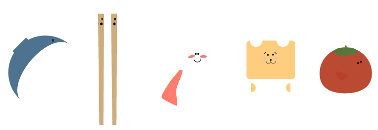

Kogi's Lunchbox adventures
The week assignment was to develop a story and characters for an animation. The story had to include a protagonist, antagonist, helper and an obstacle. We were supposed to have a narrative curve and use the dramaturgical elements. We also had to create a small spritesheet animation.
Idea
I wanted to create something that introduces children to foods from
different countries. The idea is that the user can choose from
several lunchboxes to begin with. Each lunchbox represents the most
common food that is eaten for lunch in schools in a certain country.
The main character named Kogi gets put into one of the lunchboxes
either by spoon/fork, chopsticks or hand (depending on how people
eat in the country the food is from). In each lunchbox Kogi
experiences another adventure.
In this story Kogi finds
himself in a japanese lunchbox. There is a little tomato that gets
chased by scary monster and Kogi needs to help the tomato cross the
river.
Process
As my given style was flatdesign, I made a style tile to get to know the characteristics of the style. I also worked on the story idea, message and genre. The next step was to create a storyboard and each character. I thought about how the characters would look like from different sides and how animation principles could be applied to their movements.
Find the full documentation here.
Solution
I used HTML, CSS and Illustrator to create the spritesheet animation you can find here. The characters and backgrounds were made in Illustrator.
The characters
Background elements
A background

Thoughts
It was interesting to see what goes into developing a small animation and I realised how important it is to apply animation principles to your animation, in order to create smooth motions.